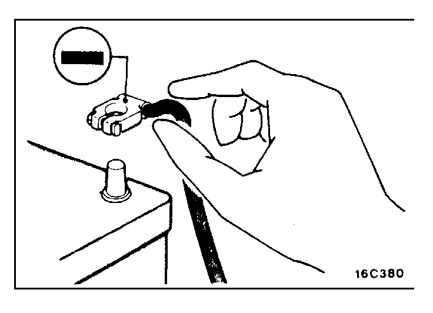
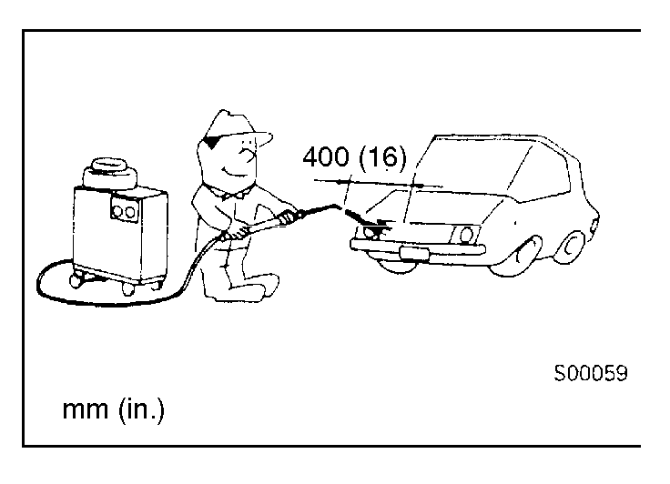
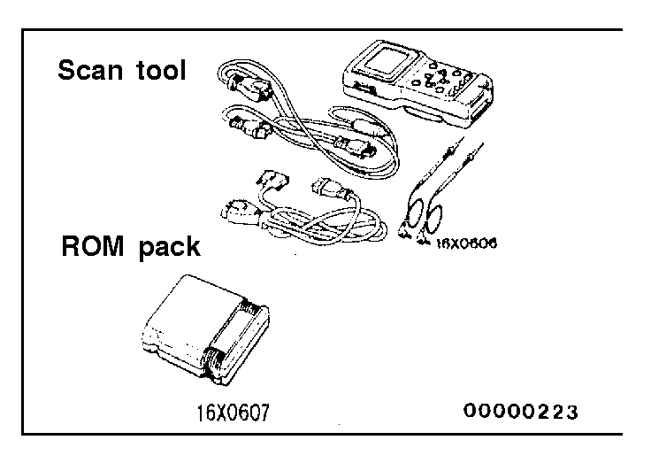

![[Previous]](https://mitsubishitechinfo.com/data/F24S/BUTTONS/fprevg.png)
![[Next]](https://mitsubishitechinfo.com/data/F24S/BUTTONS/fnextg.png)
  
SERVICING THE ELECTRICAL SYSTEM
1.Note the following before proceeding with work on the electrical system.
Note that the following must never be done:
Unauthorized modifications of any electrical device or wiring, because such modifications might lead to a vehicle malfunction, over-capacity or short-circuit that could result in a fire in the vehicle.
2.When servicing the electrical system, disconnect the negative cable terminal from the battery.
Caution
1.Before connecting or disconnecting the negative cable, be sure to turn off the ignition switch and the lighting switch.
(If this is not done, there is the possibility of semiconductor parts being damaged.)
2.After completion of the work steps [when the battery's negative (-) terminal is connected], warm up the engine and allow it to idle for approximately five minutes under the conditions described below, in order to stabilize the engine control conditions, and then check to be sure that idling is satisfactory.
Engine coolant temperature: 80 - 95°C (176 - 203°F)
Lights, electric fans, accessories: OFF
Transaxle: Neutral position
(A/T models: "N" or "P")
Steering wheel: neutral (center) position
VEHICLE WASHING
If high-pressure car-washing equipment or steam car-washing equipment is used to wash the vehicle, be sure to maintain the spray nozzle at a distance of at least 400 mm (16 in.) from any plastic parts and all opening parts (doors, luggage compartment, etc.).

APPLYING ANTI-CORROSION AGENT OR OTHER UNDERCOAT AGENTS
Be careful not to adhere oil or grease to the heated oxygen sensor. If adhered, the sensor may malfunction.
Protect the heated oxygen sensor with a cover before applying anti-corrosion agent, etc.
SCAN TOOL
To operate the scan tool, refer to the "MUT-II OPERATING INSTRUCTIONS".
Caution
Turn the ignition switch off before connecting and disconnecting the scan tool.